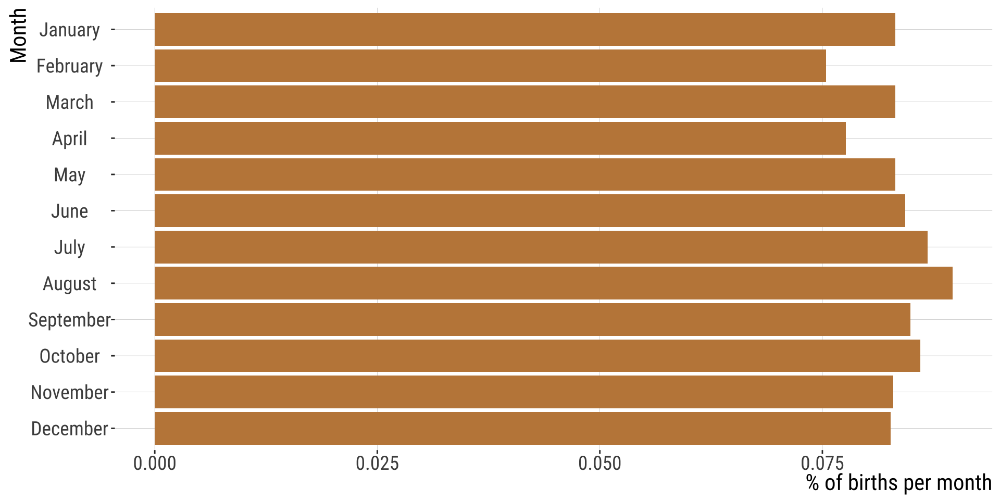
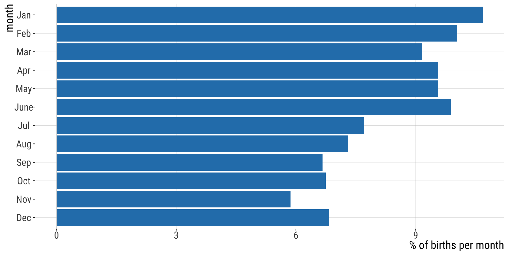
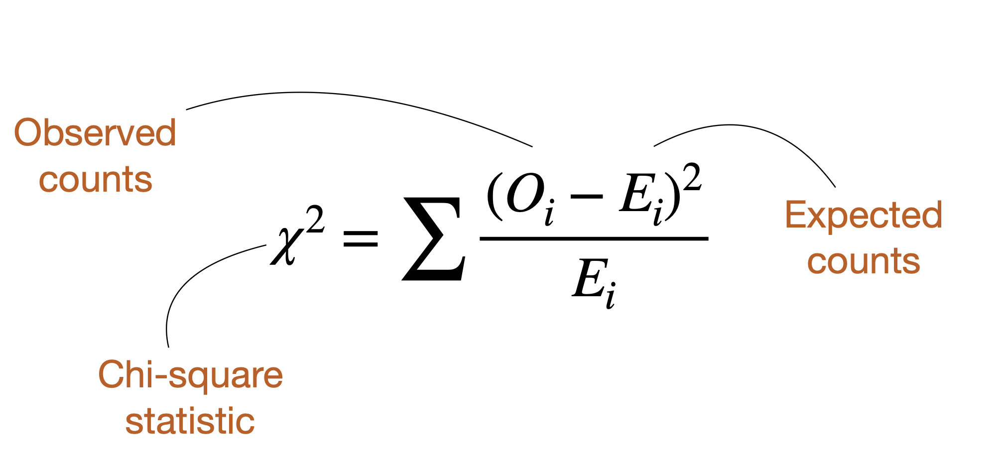

Frequency table showing the activities of 88 people at the time they were attacked and killed by tigers near Chitwan National Park, Nepal, from 1979 to 2006.
What is a model?
A model is a simplified description of a system used to:
Explain patterns
Make predictions
Test ideas
Types of models:
Physical model – tangible representation
Verbal model – conceptual explanation
Mathematical model – uses equations or probabilities to make precise predictions
In this course, we focus on probability models.
A probability model describes how likely various outcomes are
Examples of probability models
The binomial model
The proportional model
The Poisson model
The proportional model
In many biological problems, the null hypothesis assumes that outcomes occur in fixed proportions.
A proportional model states that:
Each category has an expected proportion.
The expected number of observations in each category depends on:
The total sample size
The proportion assigned to that category.
We compare observed counts to these expected counts.
The binomial model is a special case with two categories.
Proportional model example: NHL player birth months
The ‘Matthew effect’ in elite hockey players. radiolab [2:55-5:15].
\(H_0\): Elite hockey players are born randomly across the year.
\(H_A\): Elite hockey players are NOT born randomly. Biological hypothesis: Being born earlier in the year makes players stand out when young, helping them achieve later success.
If the null model is correct, observed frequencies should be close to equal.
Large deviations suggest the model may not fit.
Observed x Expected
Expected proportions
Code
# births |>t()|> kable() |> kable_styling(full_width = FALSE,font_size = 20)us_births <- us_births |>mutate(`%births`= Births/sum(Births))us_births |>ggplot(aes(x = Month, y =`%births`)) +geom_col(fill ="#C18748") +coord_flip() +ylab("% of births per month")

Expectation (null model): Human births by month (2023). Source: The U.S. National Center for Health Statistics1
Observed proportions
Code
nhl |>rename(obs.births = births) |>mutate(`obs%births`= (obs.births/sum(obs.births)) *100) |>ggplot(aes(x = month, y =`obs%births`)) +geom_col(fill ="#2980b9") +ylab("% of births per month") +coord_flip()

Month of birth of 1,245 NHL elite hockey players.
To compute expected frequencies, we use the proportions specified by the null model
Important: These data come from a single calendar year (2023).
\(\chi^2\) summarizes the fit of categorical data to expectations.

Interpretation:
\(\chi^2 = 0\): Data perfectly match null hypothesis expectations
\(\chi^2 > 0\): Data show deviation from null hypothesis expectations. Larger \(\chi^2\) indicate larger deviations from null and are more likely ot be significant (though this also depends on sample size)
The \(\chi^2\) distributions are continuous probability distributions, so we use the area under the curve (not the height of the curve) to obtain an APPROXIMATE\(P\)-value. NOTE: This is always a one-tailed test (even if your \(H_{a}\) is two-tailed).
Statistical Table A in your book [old fashioned, for exam].
df | a
0.1
0.05
10^-2
10^-3
10^-4
10^-5
10^-6
10^-7
1
2.71
3.84
6.63
10.8
15.1
19.5
23.9
28.4
2
4.61
5.99
9.21
13.8
18.4
23.0
27.6
32.2
3
6.25
7.81
11.34
16.3
21.1
25.9
30.7
35.4
4
7.78
9.49
13.28
18.5
23.5
28.5
33.4
38.2
5
9.24
11.07
15.09
20.5
25.7
30.9
35.9
40.9
6
10.64
12.59
16.81
22.5
27.9
33.1
38.3
43.3
7
12.02
14.07
18.48
24.3
29.9
35.3
40.5
45.7
8
13.36
15.51
20.09
26.1
31.8
37.3
42.7
48.0
9
14.68
16.92
21.67
27.9
33.7
39.3
44.8
50.2
10
15.99
18.31
23.21
29.6
35.6
41.3
46.9
52.3
11
17.28
19.68
24.72
31.3
37.4
43.2
48.9
54.4
12
18.55
21.03
26.22
32.9
39.1
45.1
50.8
56.4
We had \(\chi^2=44.89; df=12-1-0=11\); critical value for \(\chi_{11,0.05}^2=19.68\) and for \(\chi_{11,0.01}^2=24.72\)
Assuming \(\alpha=0.05\), we can determine that \(10^{-6}<P<10^{-5}\).
We could stop here
If we stop here, we have our \(P\)-value and could simply report it and let the reader judge the evidence.
But NHST expects us to “make a decision”.
Making a Decision: Compare \(P\) to \(\alpha\)
In general, a critical value is the value of a test statistic that marks the boundary of a specified area in the tail (or tails) of the sampling distribution under \(H_0\).
Choose a significance level\(\alpha\) (e.g., 0.01).
Decision rule:
If \(P \le \alpha\), reject \(H_0\).
If \(P > \alpha\), fail to reject \(H_0\).
When using software:
The \(P\)-value is computed directly.
Compare it to \(\alpha\) to make your decision.
When working by hand:
Instead of computing \(P\), compare the test statistic to a critical value.
The critical value marks the boundary between rejecting and not rejecting \(H_0\).
Look up the critical value in a chi-squared table (using the correct degrees of freedom).
Both approaches lead to the same conclusion.
Interpreting the results
Important:
Rejecting \(H0\) does not prove the model is false.
Failing to reject \(H0\) does not prove the model is true.
We are evaluating evidence, not proving certainty. * \(P\) is very small. Data like these would rarely be generated under the null.
We reject \(H_0\) under \(\alpha=0.05\) (and 0.01) & conclude that birth months of NHL players do not follow that of the rest of the population.
To summarize what we just did
• This was an example of using the \(\chi^2\) goodness-of-fit test to test if the data follows a proportional model
• The proportional model is a probability model in which the frequency of occurrence of events is proportional to the number of opportunities.
• Critical values are used in association with statistical tables to determine whether the \(P\)-value is below a pre-determined threshold
• You don’t need critical values when you use something like R to calculate your \(P\)-value
• Real life: Always best to report actual \(P\)-value than a range. When doing this by hand, range is fine.
• \(P\)-values are always approximate because is a continuously distributed variable